From SQL to Vector Databases: Understanding the Modern Database Landscape
For decades, databases were primarily about storing structured business data - customers, invoices, products, employees, and transactions. Today, applications are very different. They process billions of events, unstructured documents, images, conversations, and AI embeddings. This article gives a practical overview of that evolution, including architecture, scaling techniques, example commands, and a comparison of major database technologies.
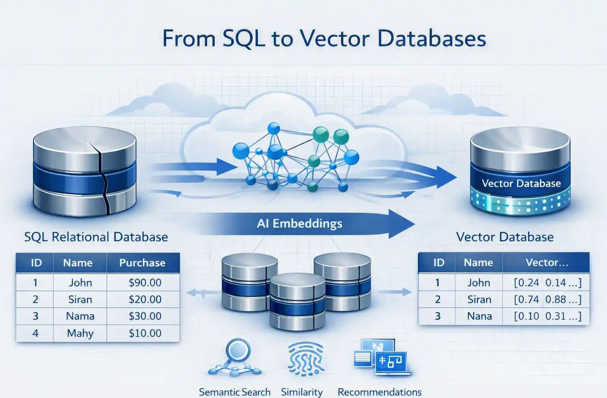
As a result, the database landscape has evolved from traditional SQL databases to NoSQL, distributed databases, time-series databases, graph databases, and most recently, Vector Databases. At the same time, public cloud providers such as AWS, Microsoft Azure, and Google Cloud have transformed databases from something administrators had to install and maintain into managed, highly scalable services.
1. SQL Databases - The Traditional Foundation

SQL databases, or relational databases, organize information into tables consisting of rows and columns. Popular examples include PostgreSQL, MySQL, MariaDB, Microsoft SQL Server, and Oracle Database.
A simple customer table might look like:
| ID | Name | Country | |
|---|---|---|---|
| 1 | John | john@example.com | India |
| 2 | Mary | mary@example.com | USA |
The major strength of relational databases is the ability to maintain relationships and transactional consistency.
CREATE TABLE customers (
id SERIAL PRIMARY KEY,
name VARCHAR(100),
email VARCHAR(255) UNIQUE,
country VARCHAR(100)
);
INSERT INTO customers (name, email, country)
VALUES ('John', 'john@example.com', 'India');
SELECT * FROM customers
WHERE country = 'India';SQL databases are particularly suitable for banking, ERP, CRM, accounting, e-commerce transactions, HR systems, and inventory management.
ACID Transactions
Traditional relational databases are designed around ACID transactions:
- Atomicity - a transaction completely succeeds or fails.
- Consistency - data remains valid according to defined rules.
- Isolation - concurrent transactions don't improperly interfere with each other.
- Durability - committed data survives failures.
For example, transferring ₹10,000 between two bank accounts should not result in money being deducted from one account without being credited to the other.
2. NoSQL - When Tables Aren't Enough
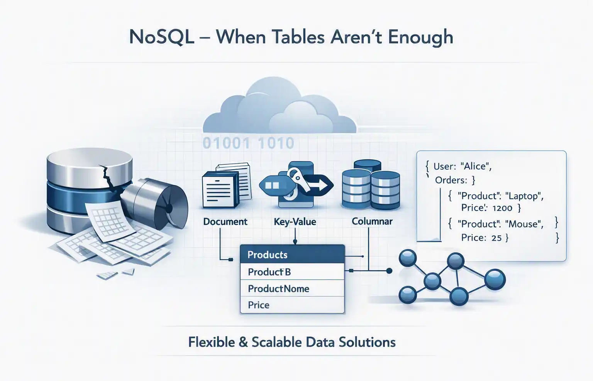
As applications became internet-scale, developers encountered situations where rigid relational schemas were not always appropriate. This led to NoSQL databases. NoSQL doesn't simply mean "no SQL." It generally refers to databases designed around alternative data models and often optimized for distributed workloads.
Document Databases
Examples include MongoDB, Couchbase, Amazon DocumentDB, and Azure Cosmos DB. Instead of rows and columns, data can be stored as JSON-like documents:
{
"name": "John",
"email": "john@example.com",
"skills": [
"AWS",
"Kubernetes",
"Terraform"
]
}MongoDB example:
db.customers.insertOne({
name: "John",
email: "john@example.com",
country: "India"
});
db.customers.find({
country: "India"
});Document databases are useful for applications where records have flexible or evolving structures.
3. Key-Value Databases
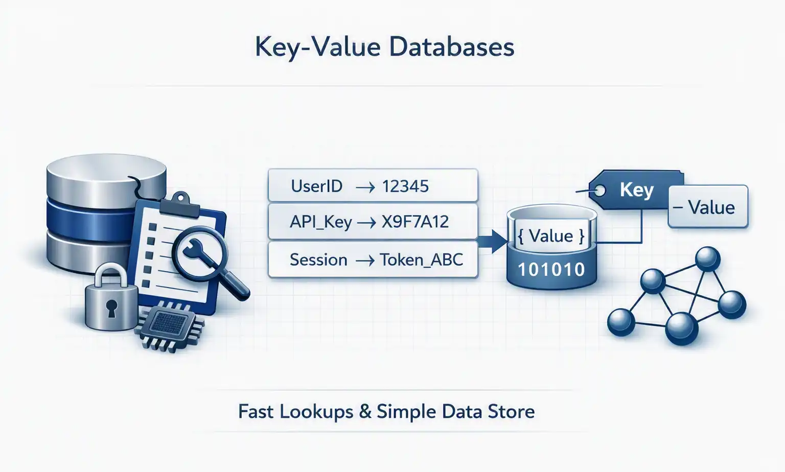
A key-value database stores data essentially as KEY → VALUE. For example: user:1001 → {"name":"John","country":"India"}. A common example is Redis.
redis-cli SET user:1001 "John"
redis-cli GET user:1001Key-value databases are extremely useful for caching, sessions, rate limiting, counters, temporary application state, and real-time applications.
The application checks Redis first. If the data isn't there, it retrieves it from PostgreSQL and places it into Redis. This is called cache-aside or lazy caching.
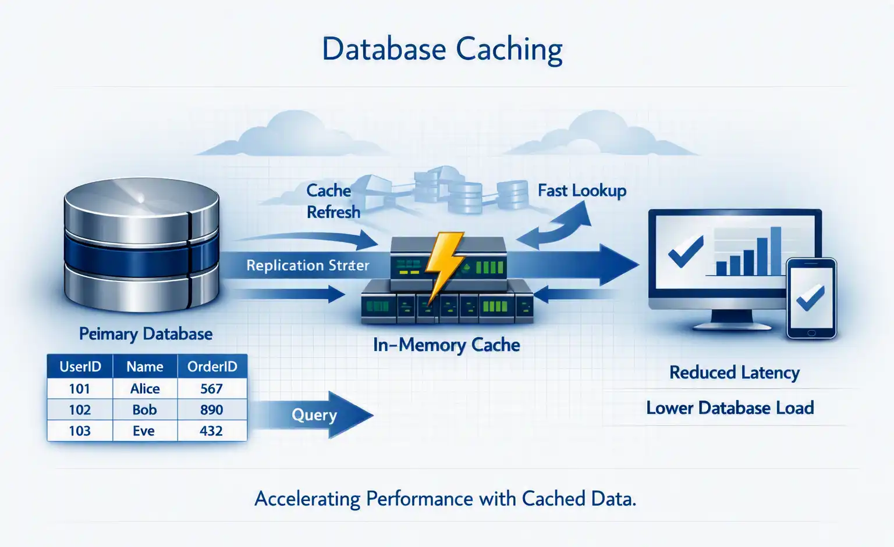
4. Wide-Column Databases

Wide-column databases are designed for extremely large distributed datasets. Examples include Apache Cassandra, ScyllaDB, Amazon Keyspaces, and Google Bigtable. They are particularly useful when applications require massive write throughput and horizontal scalability.
Cassandra example:
CREATE KEYSPACE company
WITH replication = {
'class': 'SimpleStrategy',
'replication_factor': 3
};
CREATE TABLE company.users (
id UUID PRIMARY KEY,
name TEXT,
country TEXT
);
SELECT * FROM company.users;Cassandra is commonly used for workloads such as IoT, telemetry, messaging, large-scale event storage, and distributed applications.
5. Graph Databases
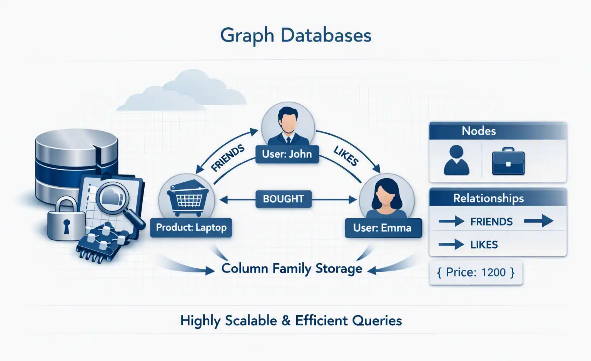
Some data is naturally represented as relationships. For example: John → works_for → Company A, John → knows → Mary, Mary → works_for → Company B. Trying to represent complex relationships using conventional relational joins can become expensive.
Graph databases store nodes and relationships as first-class concepts. A popular example is Neo4j.
Cypher query:
MATCH (p:Person)-[:WORKS_FOR]->(c:Company)
RETURN p.name, c.name;Graph databases are useful for social networks, fraud detection, recommendation systems, knowledge graphs, network topology, and identity relationships.
6. Time-Series Databases
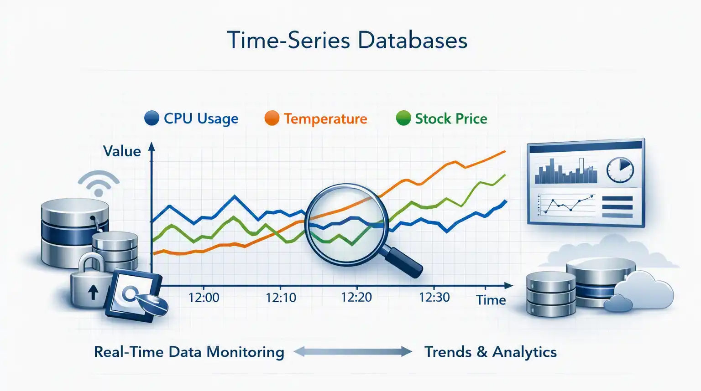
Some applications generate data continuously over time. For example:
2026-08-13 10:00 → CPU = 42%
2026-08-13 10:01 → CPU = 45%
2026-08-13 10:02 → CPU = 51%This is time-series data. Examples include InfluxDB, TimescaleDB, and Amazon Timestream. They are particularly useful for monitoring, IoT, financial data, infrastructure metrics, and application telemetry.
7. Vector Databases - The AI Era
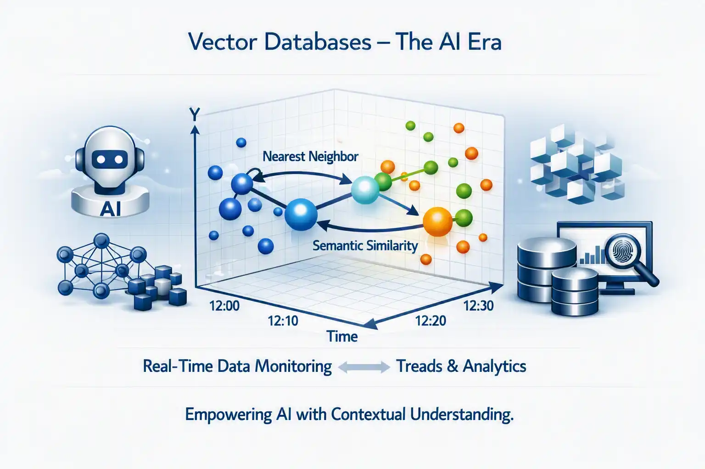
The newest major category is the Vector Database. Traditional databases search for exact values:
SELECT *
FROM documents
WHERE title = 'Kubernetes';AI applications need something different. Suppose a document contains: "Kubernetes automatically manages containerized workloads." A user asks: "How does Kubernetes manage containers?" The words are different, but the meaning is similar.
An AI embedding model converts text into a numerical vector:
"Kubernetes manages containers"
↓
[0.021, -0.182, 0.731, ...]The database can then search for vectors that are mathematically close to the query vector. This is called vector similarity search.
Popular options include Pinecone, Weaviate, Milvus, Qdrant, pgvector, OpenSearch, Azure AI Search, Amazon OpenSearch Service, and Vertex AI Vector Search.
A PostgreSQL database can even perform vector searches using pgvector:
CREATE EXTENSION vector;
CREATE TABLE documents (
id BIGSERIAL PRIMARY KEY,
content TEXT,
embedding VECTOR(1536)
);Similarity search:
SELECT content
FROM documents
ORDER BY embedding <=> '[0.12,0.34,0.56,...]'
LIMIT 5;This technology is fundamental to RAG - Retrieval-Augmented Generation.
8. The Rise of Multi-Model Databases
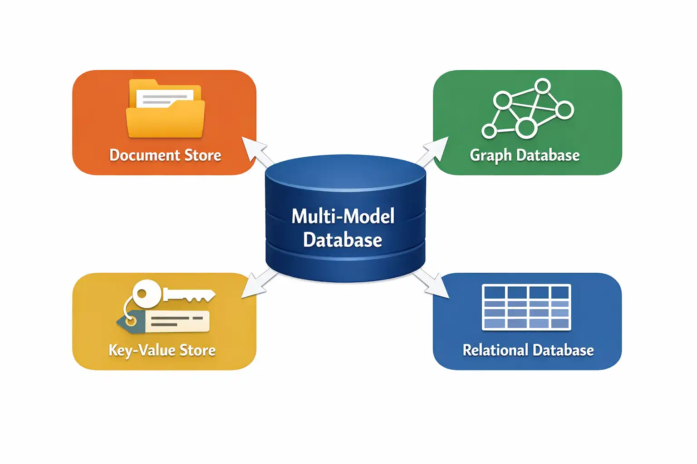
Modern applications increasingly don't want to operate a separate database for every workload. Some platforms therefore support multiple data models. For example, an application might require:
- Transactional data → SQL
- Cache → Redis
- Documents → NoSQL
- Relationships → Graph
- Metrics → Time-series
- AI knowledge → Vector
The architectural question becomes: Should we use one database for everything or the best database for each workload? There is no universal answer. A polyglot persistence architecture deliberately uses different databases for different workloads.
9. Database Sharding
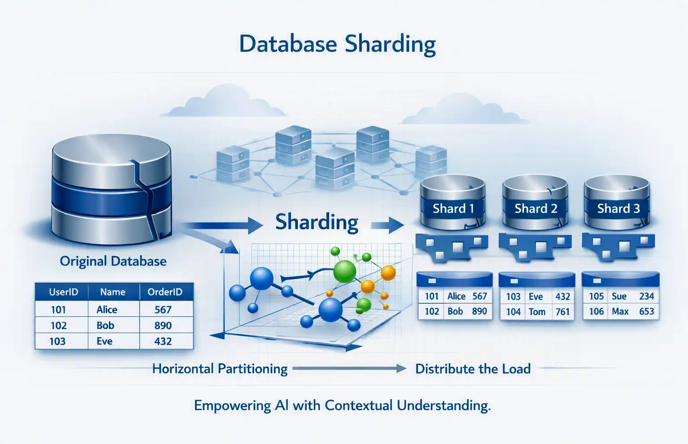
One of the most important concepts in large-scale database architecture is sharding. Suppose a database contains 1 billion customers. Instead of storing everything on one server, we divide the data across multiple database nodes. This is horizontal partitioning.
For example, customer_id % 3 could determine the shard:
Customer 100 → Shard 1
Customer 101 → Shard 2
Customer 102 → Shard 3
Customer 103 → Shard 1Advantages: horizontal scalability, higher throughput, smaller datasets per node, and failure isolation.
Challenges: cross-shard queries, transactions across shards, rebalancing, and choosing the correct shard key. A poor shard key can create a hot shard, where one database receives much more traffic than the others.
10. Replication
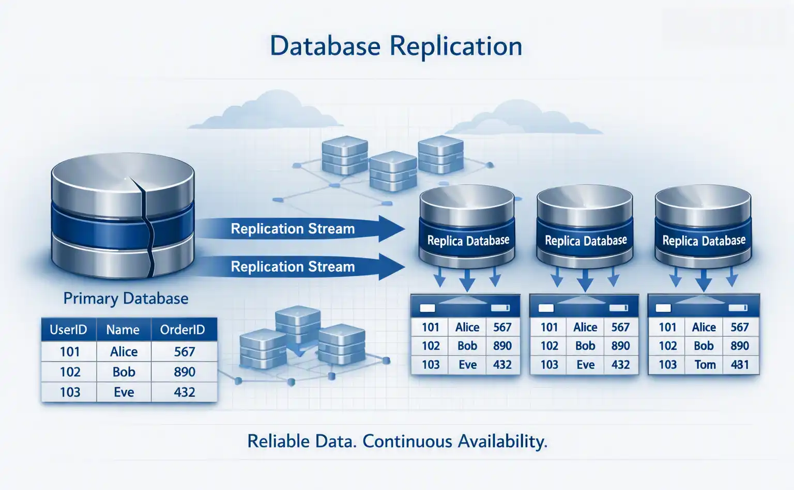
Replication creates copies of database data. A common architecture has a primary handling writes while replicas handle read traffic.
This provides high availability, read scalability, disaster recovery, and reduced load on the primary. However, replicas may be eventually consistent, depending on the technology and configuration.
11. Database Partitioning
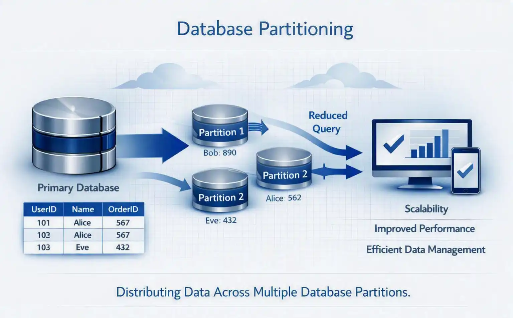
Partitioning divides a logical table into smaller physical pieces. A query for 2026 doesn't necessarily need to scan older partitions.
Common approaches include:
- Range partitioning - 2024 → Partition A, 2025 → Partition B, 2026 → Partition C
- Hash partitioning -
hash(customer_id) - List partitioning - India → Partition A, USA → Partition B, UK → Partition C
Partitioning and sharding are related concepts but aren't identical. Partitioning can occur within a database system, while sharding generally distributes partitions across multiple database nodes.
12. Read Replicas
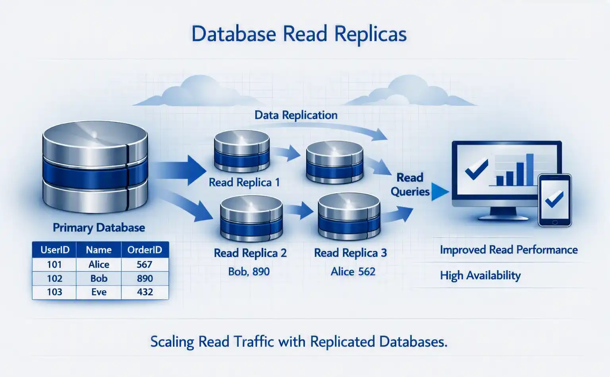
If an application receives significantly more reads than writes, read replicas allow the application to scale read workloads independently.
Typical use cases include news websites, e-commerce, SaaS applications, and analytics dashboards.
13. Database Clustering
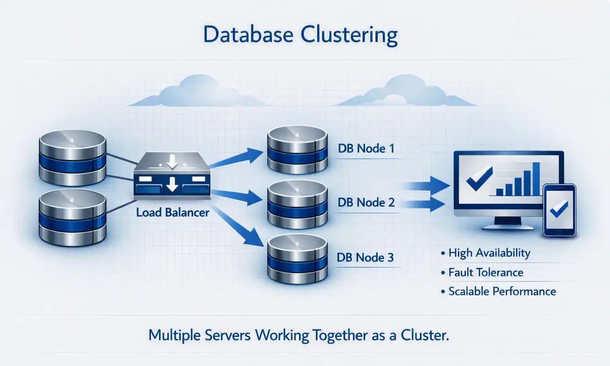
A database cluster consists of multiple database servers working together. Depending on the database technology, clustering may provide high availability, replication, automatic failover, and horizontal scaling.
Distributed databases take this concept much further by treating multiple machines as one logical database system.
14. Managed Databases on Public Cloud
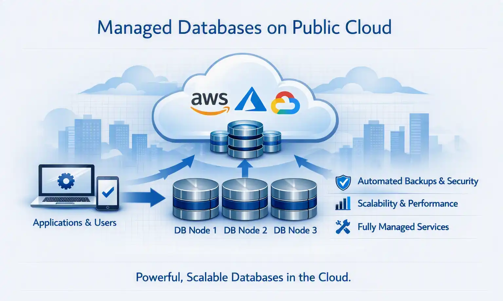
Cloud providers changed database operations significantly. Instead of installing Linux → Database → Replication → Backup → Monitoring, you can provision a managed service. The major cloud providers have extensive database portfolios.
| Database Type | AWS | Azure | Google Cloud |
|---|---|---|---|
| PostgreSQL | RDS / Aurora | Azure Database for PostgreSQL | Cloud SQL |
| MySQL | RDS / Aurora | Azure Database for MySQL | Cloud SQL |
| SQL Server | RDS | Azure SQL | Cloud SQL |
| NoSQL | DynamoDB | Cosmos DB | Firestore |
| Key-Value | ElastiCache | Azure Cache for Redis | Memorystore |
| Wide Column | Keyspaces | Cosmos DB | Bigtable |
| Graph | Neptune | Cosmos DB | - |
| Time Series | Timestream | Data Explorer | Bigtable / Managed Service |
| Data Warehouse | Redshift | Synapse | BigQuery |
| Search / Vector | OpenSearch | AI Search | Vertex AI Vector Search |
| PostgreSQL + Vector | RDS/Aurora + pgvector | Azure PostgreSQL + pgvector | Cloud SQL + pgvector |
15. Example: AWS
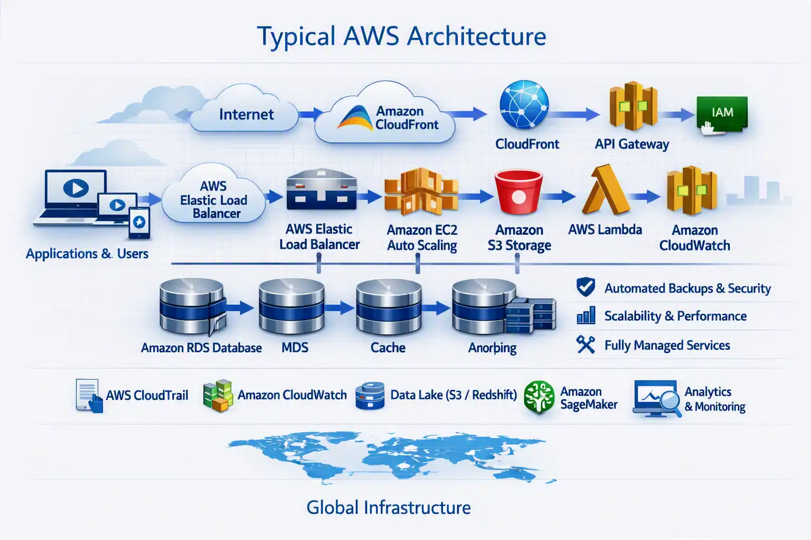
Creating an RDS database is typically done through the AWS CLI or infrastructure-as-code. For example:
aws rds describe-db-instancesCreating a DynamoDB table:
aws dynamodb create-table \
--table-name Users \
--attribute-definitions AttributeName=UserId,AttributeType=S \
--key-schema AttributeName=UserId,KeyType=HASH \
--billing-mode PAY_PER_REQUESTAdding an item:
aws dynamodb put-item \
--table-name Users \
--item '{"UserId":{"S":"1001"},"Name":{"S":"John"}}'For Redis-compatible caching, AWS provides managed caching services. A typical AWS architecture could therefore be:
16. Example: Microsoft Azure
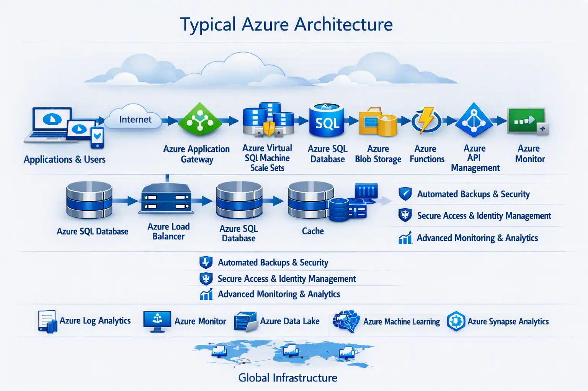
Azure SQL can be managed through the Azure CLI. For example:
az sql server create \
--name myserver \
--resource-group my-rg \
--location centralindia \
--admin-user dbadmin \
--admin-password '' A PostgreSQL server can similarly be provisioned through Azure's managed database services. Azure Cosmos DB is designed for globally distributed NoSQL workloads.
For AI workloads:
17. Example: Google Cloud
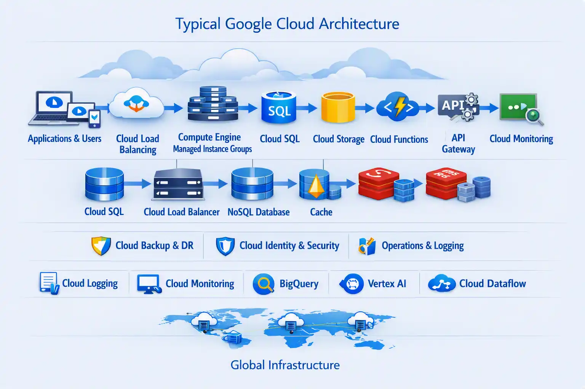
Cloud SQL provides managed relational databases. For example:
gcloud sql instances listCreating an instance:
gcloud sql instances create my-postgres \
--database-version=POSTGRES_16 \
--region=asia-south1Google Cloud also provides BigQuery for analytical workloads and Bigtable for large-scale wide-column workloads.
18. OLTP vs OLAP
Another important distinction is between transaction processing and analytics.
OLTP - Online Transaction Processing is used for day-to-day application transactions: create order, update customer, process payment, update inventory. Typical databases include PostgreSQL, MySQL, SQL Server, and Oracle.
OLAP - Online Analytical Processing is used for large-scale analysis: What were our sales by region over five years? Which products are growing fastest? What is the average customer lifetime value? Typical platforms include Snowflake, BigQuery, Amazon Redshift, and Azure Synapse.
19. Database Selection Cheat Sheet
| Requirement | Good Starting Point |
|---|---|
| Financial transactions | PostgreSQL / SQL Server / Oracle |
| General SaaS application | PostgreSQL |
| Flexible JSON documents | MongoDB / Cosmos DB |
| Extremely fast cache | Redis |
| Massive distributed writes | Cassandra / DynamoDB |
| Relationships | Neo4j |
| Metrics and telemetry | TimescaleDB / InfluxDB |
| Large-scale analytics | BigQuery / Redshift / Synapse |
| AI semantic search | Vector DB |
| RAG application | PostgreSQL + pgvector / dedicated Vector DB |
| Full-text search | OpenSearch / Elasticsearch |
| Global NoSQL application | DynamoDB / Cosmos DB |
| Simple serverless application | Managed cloud database |
20. The Modern Database Architecture
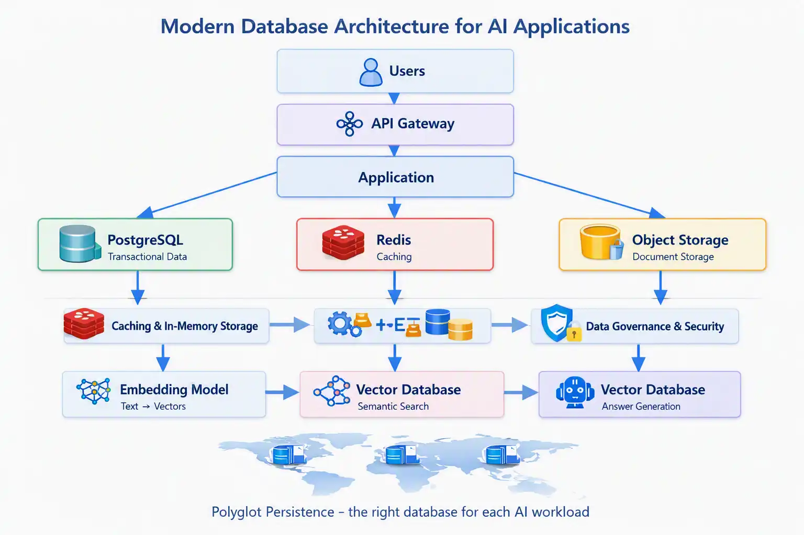
The most interesting change is that modern applications rarely have a single database. Consider an enterprise AI application:
Meanwhile, operational metrics may go to Prometheus → Time-Series Storage → Grafana, and application events may flow into Kafka / Pub/Sub → Data Lake → Data Warehouse.
This is polyglot persistence: using the right database technology for each type of workload rather than forcing one database to solve every problem.
21. The Future: Database + AI
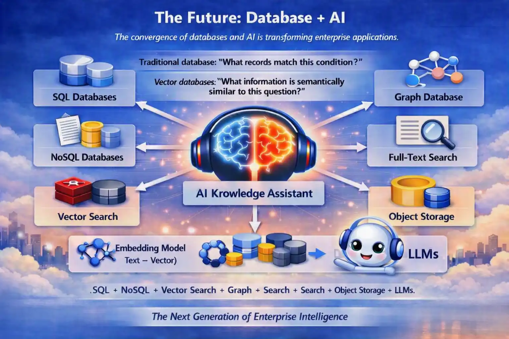
The boundary between databases and AI is becoming increasingly blurred. Traditional databases answer: "What records match this condition?" Vector databases answer: "What information is semantically similar to this question?"
AI-native applications increasingly combine SQL + NoSQL + Vector Search + Graph + Search + Object Storage + LLMs. For example, an enterprise knowledge assistant could use:
The future isn't necessarily about replacing SQL with Vector Databases. Instead, it is about combining multiple data models intelligently.
Final Takeaway
The database journey can be summarized as:
SQL → NoSQL → Distributed Databases → Cloud Managed Databases → Data Warehouses / Data Lakes → Search Engines → Vector Databases → AI-Native Data Platforms
The important lesson for architects is not to ask, "Which database is the best?" The better question is:
For a modern enterprise platform, PostgreSQL might remain the system of record, Redis might handle caching, object storage might hold documents, OpenSearch might provide search, a vector database might power RAG, and a data warehouse might handle analytics.
There is no single database for every problem. The skill of modern database architecture is knowing where each technology fits - and designing them to work together.